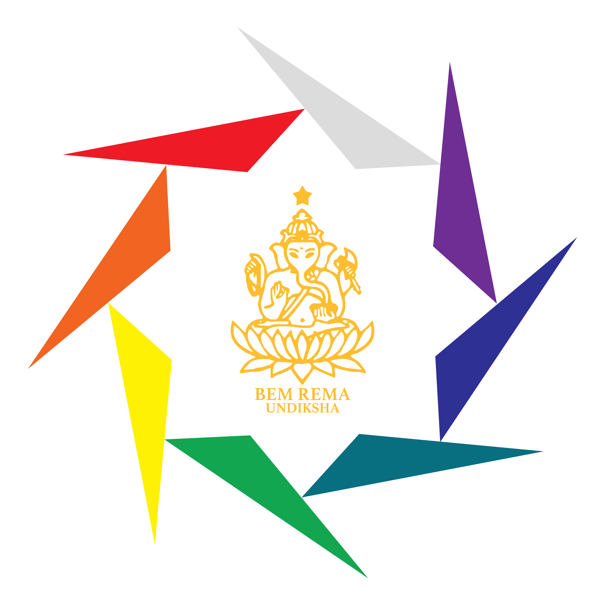

Pengalaman Organisasi
Beberapa Organisasi yang pernah saya ikuti.

BEM REMA Undiksha
2026 - 2027Staff Direktorat Jenderal Kebudayaan
Direktorat Jenderal Kebudayaan bertugas melestarikan, mengembangkan, dan mempromosikan nilai-nilai budaya melalui berbagai kegiatan yang mendorong apresiasi terhadap keberagaman budaya, sekaligus memperkuat karakter mahasiswa sebagai insan akademis yang berbudaya.
PANWASRA REMA Undiksha
2025 - 2026Anggota Biro Humas
Berperan aktif dalam menyebarkan informasi dan melakukan pengawasan seputar Pemilihan Umum Raya BEM REMA Undiksha.
BEM FTK Undiksha
2025 - 2026Staff Divisi Media dan Informasi
Berperan dalam penyebarluasan informasi, desain sosial media, dan pengelolaan sosial media organisasi.